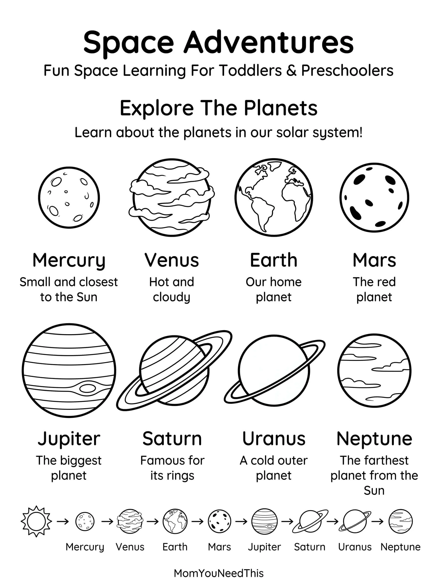

Space & Planets Free Printable Space & Planets Chart For Kids
This free space and planets chart gives toddlers and preschoolers the solar system at a glance: all eight planets in order from the Sun, each with its color, its size compared to its neighbors, and the one feature it is famous for. A chart is a reference a child returns to — hung at eye level, it answers “which one has rings?” and “which is biggest?” a hundred times, until the answers are simply known.
Charts teach a different skill from worksheets: looking things up. A child who consults the chart to settle a question — theirs or yours — is practicing the founding move of all research. This one is designed for repeat consultation: big, ordered, and honest about scale where it counts (the giants really are giants; the rocky four really are pebbles beside them).
Quick Answer
A chart is a reference kids return to, and this one puts the whole solar system at eye level: this free space planets chart shows all eight planets in order from the Sun, each with its color, its size beside its neighbors and the one feature it is famous for. For toddlers and preschoolers — no signup.
At a Glance
- Ages: Toddlers and preschoolers
- Activity: A solar system chart: all eight planets in order from the Sun
- Skills: Planet order and space facts
- Format: Printable chart (PDF)
- Cost: Free, no signup
🌎 Explore The Solar System
Use the printable to help your child learn the names of the planets, discover where Earth fits in the solar system, and start conversations about space and our universe.
Free Space & Planets Printable


How To Use This Printable
- Download and print the space and planets chart on letter-size paper.
- Hang it at your child's eye level — a chart on a wall teaches all week; a chart in a drawer teaches once.
- Walk the order together — count the planets out from the Sun, naming each, until your child can run the parade solo.
- Play the lookup game — take turns asking questions only the chart can answer: “Which planet is red?” “Which two are blue?” “Which is smallest?” Looking it up is the game.
Why Learn About Space & Planets?
Space is the first topic that teaches scale: a child learns their address is a street, in a town, on a planet, in a system of eight, around one ordinary star among billions. That widening — handled gently, with a chart on the wall — is wonder with a structure, and it reliably produces the question-asking years.
The chart format builds early science vocabulary (planet, orbit, star, solar system) and the reference habit at once. It also quietly prepares the ground for the deeper space pages on this site — astronauts, the Moon, the stars — each of which zooms into one square of this chart.
🎁 Keep Exploring Free Learning Activities
Discover more printable activities, toddler resources, and learning ideas created for busy parents.
🎁 View All Free Resources🪐 Reading The Planet Chart
Order is the chart's backbone: Mercury, Venus, Earth, Mars, Jupiter, Saturn, Uranus, Neptune — always counted out from the Sun, because distance from the Sun is what decides each planet's temperature and year length. Mercury's year is 88 days; Neptune's is 165 Earth years. Nobody has ever had a birthday on Neptune.
Two families: the four inner planets are small and rocky — worlds with ground. The four outer giants are enormous balls of gas and liquid with no surface to stand on. The chart's size jump between Mars and Jupiter is the whole story at a glance.
Colors are clues: Mars is red from rusty dust; Neptune is deep blue; Venus is creamy yellow-white under its clouds; Earth is the blue marble, colored by oceans — the only planet whose color is mostly water, and the only one with anybody on it looking at charts.
Two chart questions every child asks: Is the Sun a planet? No — it is a star, and the planets are its family, held by its gravity. Is the Moon a planet? No — it is Earth's moon, a satellite: a world that orbits a planet instead of the Sun. Both answers are on the chart's logic, and a child who can give them owns the map.
❓ Space Planets FAQ
Is this space planets printable really free?
Yes — this space and planets chart is 100% free to download and print at home. No signup and no payment needed. Print it large if your printer allows — a chart's whole job is to be read from across the room, all week long.
What ages is this printable best for?
It is made for toddlers and preschoolers, ages 2–5. Little ones (2–3) learn the parade of names and colors; older preschoolers (4–5) can use the chart as a reference — answering lookup questions, comparing sizes, and sorting the rocky four from the giant four.
What supplies do we need?
Just the printed chart plus crayons or markers — and wall space at child height. The lookup game needs no supplies at all and can be played from the dinner table once the chart is memorized, which happens faster than adults expect.
🔗 More Free Printables You’ll Love
- Free Alphabet Coloring Pages Free printable alphabet coloring pages for little learners.
- Free Space Coloring Pages Free printable space coloring pages for little learners.
- Free Space Learning Pages Free printable space learning pages for little learners.
- Free Letter A Formation Practice Free printable letter a formation practice for little learners.